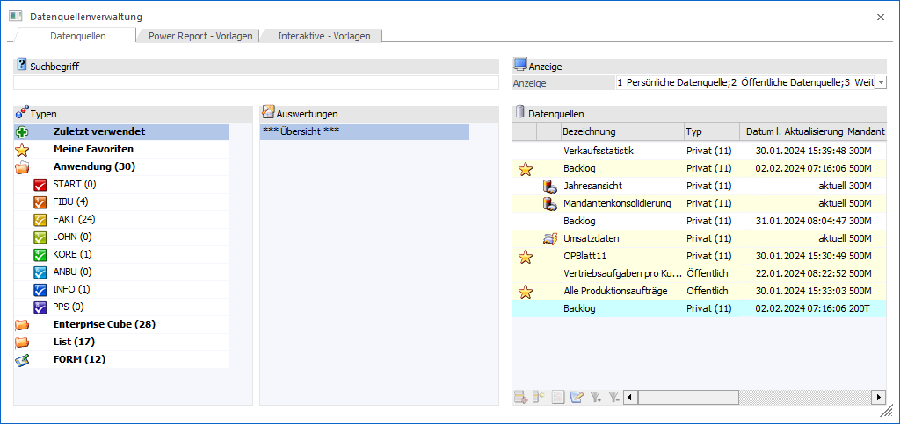

Das Programm "Datenquellenverwaltung" stellt eine Übersicht über die bestehenden Datenquellen und deren Power Report-Vorlagen zur Verfügung. Der weitere Funktionsumfang ist abhängig vom Aufruf des Fensters:
ü Aufruf via Menü
Wenn die
Datenquellenverwaltung über den Menüpunkt…
1 WinLine INFO
1 Business Intelligence
1 Datenquellenverwaltung
… aufgerufen wird, so können Datenquellen und Vorlagen in vollen Umfang administriert und in diversen Formen ausgegeben werden.
ü Aufruf via Programm "Action Server
- Aktion"
Bei der Einrichtung einer Aktion des Typs " BI Enterprise Report "
muss eine Power Report-Vorlage gewählt werden. Die Auswahl erfolgt hierbei über
die Datenquellenverwaltung, welche somit als Matchcode fungiert (Auswahl einer
Datenquelle gefolgt von der zu verwendenden Vorlage; nur das Register Datenquellen" ist freigeschaltet).
ü Aufruf via Programm "Cockpit
Definition"
Bei der Hinterlegung des Elements "Datenquelle" muss die
Datenquelle (d.h. der Snapshot, die View oder die MasterView) gewählt werden.
Die Auswahl erfolgt hierbei über die Datenquellenverwaltung, welche somit als
Matchcode fungiert (Auswahl einer Datenquelle; nur das Register Datenquellen" ist freigeschaltet).
ü Aufruf via Programm "List -
Assistent"
Im Laufe der Anlage einer Liste des Typs "29 - Datenquellen" muss
die Datenquelle (d.h. der Snapshot) gewählt werden. Die Auswahl erfolgt hierbei
über die Datenquellenverwaltung, welche somit als Matchcode fungiert (Auswahl
eines Snapshots; nur das Register Datenquellen ist freigeschaltet).
ü Button "FORM Datenanlage" in
ausgewählten Matchcodes
Bei Anwahl des Buttons "FORM Datenanlage", welcher in
diversen Matchcodes zur Verfügung steht, muss zunächst jene FORM-Datenquelle
gewählt werden, aus welcher Datensätze übernommen werden soll. Die
Datenquellenverwaltung fungiert hierbei als Matchcode (Auswahl einer
Datenquelle; nur das Register Datenquellen ist freigeschaltet).
Hinweis
Nähere Informationen zu diesem Thema entnehmen Sie bitte dem Kapitel "FORM Datenanlage".

Die Datenquellenverwaltung untergliedert sich (abhängig vom Aufruf) in die folgenden Register, welche in den nachfolgenden Kapiteln beschrieben werden:
ü Register "Datenquellen"
In diesem
Register werden die bestehenden Datenquellen mit ihren Snapshots, Views und
MasterViews angezeigt. Hierüber hinaus stehen eine Vielzahl von Verwaltungstools
zur Verfügung.
ü Register "Power Report -
Vorlagen"
In diesem Register werden die bestehenden Power Report-Vorlagen
angezeigt und verwaltet.
ü Register "Interaktive -
Vorlagen"
In diesem Register werden die bestehenden Vorlagen für die
Bereiche "WinLine Kalender" und "interaktive Ausgabe" angezeigt und
verwaltet.
Buttons
Ø Anzeigen
Durch Anwahl des Buttons "Anzeigen" bzw. der Taste F5 wird die Suche ausgelöst bzw. weitergeführt und der Fokus entsprechend gesetzt.
Ø Ende
Bei Anwahl des Buttons "Ende" bzw. der Taste ESC wird das Fenster geschlossen.
Ø Einstellungen
Durch Anwahl dieses Buttons wird das Fenster Datenquellenverwaltung - Einstellungen geöffnet, in welchem individuelle Einstellung für die Anzeige und das Programmverhalten getroffenen werden können.
Ø Ausgabe Tabelle (nur im Register Datenquellen anwählbar)
Bei der Anwahl des Buttons "Ausgabe Tabelle" wird der Inhalt der Datenquelle in Form einer WinLine Tabelle dargestellt.
Ø Power Report (nur im Register Datenquellen anwählbar)
Durch Anwahl des Buttons "Power Report" wird die ausgewählte Datenquelle im Power Report geöffnet.
Ø Ausgabe Cube (nur im Register Datenquellen anwählbar)
Wenn die Option "Ausgabe Cube" gewählt wird, dann wird der Inhalt der Datenquelle im "Olap Viewer" angezeigt, wo es dann die Möglichkeit gibt, die Daten nach verschiedenen Gesichtspunkten auszuwerten.
Ø Excel Pivot (nur im Register Datenquellen anwählbar)
Durch Anwahl des Buttons "Excel Pivot" wird der Inhalt der Datenquelle in Form einer Pivot Ausgabe in Microsoft Excel (2007 oder höher) angezeigt.
Ø Ausgabe XLSX (nur im Register Datenquellen anwählbar)
Mit Hilfe des Buttons "Ausgabe XLSX" wird der Inhalt der Datenquelle an Microsoft Excel übergeben.
Hinweis
Handelt es sich um eine Datenquelle des Programmbereichs "Enterprise Cube", so steht die Ausgabe in der Multiplattform WinLine nicht zur Verfügung.
Ø Datenquelle aktualisieren (nur im Register Datenquellen anwählbar)
Mit Hilfe des Buttons "Datenquelle aktualisieren" kann der ausgewählte persönliche Snapshot aktualisiert werden, wenn die Quelle dem Typ "Enterprise Cube" oder "List" entspricht und aus dem aktuellen Mandanten stammt.
Hinweis
Auch öffentliche Snapshots können aktualisiert werden. Hierfür ist eine Objektberechtigung größer "lesen" notwendig.
Ø Auswertung öffnen (nur im Register Datenquellen anwählbar)
Mit Hilfe des Buttons "Auswertung öffnen" kann das Ausgabeprogramm der gewählten Auswertung / Datenquelle geöffnet werden.
Ø Datenquelle exportieren / Vorlage exportieren
Abhängig vom aktuellen Register stehen unterschiedliche Funktionen zur Verfügung:
ü Register Datenquellen
Handelt es sich bei
dem aktuellen Benutzer um einen Volladministrator oder um einen Benutzer mit dem
Teiladministrationsrecht "Datenadministration", so kann der markierte Snapshot
in Form einer *.MBAC-Datei exportiert werden. Ein Export von Views oder
MasterViews ist nicht möglich.
Hinweis
Existieren zu der gewählten Datenquelle Tabellenerweiterungen, so werden diese bei dem Export ignoriert! Des Weiteren können Datenquellen des Typs "FORM" nicht exportiert werden.
ü Register Power Report - Vorlagen
Durch
Anwahl des Buttons "Vorlage exportieren" kann die markierte Vorlage exportiert
werden. Ein Volladministrator bzw. ein Benutzer mit dem Teiladministrationsrecht
"Datenadministration" kann hierbei alle Vorlagen exportieren, alle anderen
Benutzer nur die eigenen.
Hinweis
Vorlagen von Datenquellen des Typs "FORM" können nicht exportiert werden.
Ø Datenquelle importieren / Vorlage importieren
Abhängig vom aktuellen Register stehen unterschiedliche Funktionen zur Verfügung:
ü Register Datenquellen
Mit Hilfe des Buttons
"Datenquelle importieren" kann eine Datenquelle des Typs "Snapshot" für die
gewählte Auswertung importiert werden (nähere Informationen entnehmen Sie bitte
dem Kapitel Datenquelle
importieren).
Hinweis
Das Importieren kann nur von Voll- oder Datenadministratoren durchgeführt werden. Des Weiteren muss für die Auswertung, für welche ein Import vorgenommen werden soll, zumindest ein Snapshot für den Benutzer existieren!
ü Register Power Report - Vorlagen
Mit Hilfe
des Buttons "Vorlage importieren" kann eine zuvor exportierte Vorlage importiert
werden (nähere Informationen entnehmen Sie bitte dem Kapitel Vorlage importieren).
Ø Power Report-Vorlagen anzeigen / verstecken (Register "Datenquellen")
Durch Anwahl des Buttons "Power Report-Vorlagen anzeigen / verstecken" wird die Tabelle "Vorlagen" ein- bzw. ausgeblendet (Anwahl des Buttons wird benutzerspezifisch gespeichert). Innerhalb der Tabelle werden die Power Report-Vorlagen des Benutzers, bezogen auf die Auswertung / Datenquelle, angezeigt.
Ø Übersicht
Mit Hilfe dieses Buttons wird in Abhängigkeit des aktuellen Registers eine Übersicht aller Datenquellen bzw. Vorlagen am Bildschirm ausgegeben, auf welche der Benutzer Zugriff hat. Der genaue Inhalt der Auswertung richtet sich nach den aktuell gewählten Einstellungen unter "Anzeige".
Ø MasterView
Sind für die ausgewählte Datenquelle 2 oder mehr Datenquellen (ohne benutzerdefinierte Auswertungsspalten) des Typs "Snapshot" bzw. "View" vorhanden, so kann durch Anwahl des Buttons "MasterView" das Fenster Datenquellen - MasterView geöffnet werden. In diesem können neue MasterViews erstellt und bestehende editiert werden.